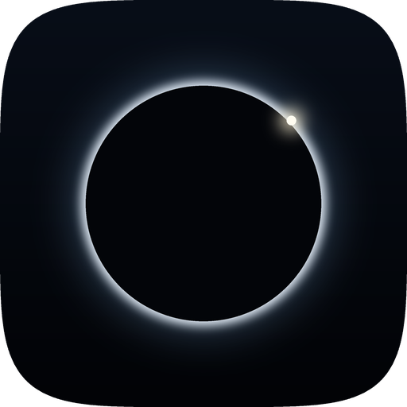

Hyaline
El material Liquid Glass de iOS 26, llevado a iOS 14, 15 y 16. Refracción real, dispersión cromática y brillos especulares, con un solo motor de render y ajuste independiente por superficie.

Tweaks para iOS 14 – 17
Añade este repositorio en Sileo, Zebra o Cydia:
https://noctra4.github.io/
Añadir a Sileo
Zebra
El material Liquid Glass de iOS 26, llevado a iOS 14, 15 y 16. Refracción real, dispersión cromática y brillos especulares, con un solo motor de render y ajuste independiente por superficie.
El Centro de Control de iOS 26. Cada control es una pieza de vidrio con su propio grosor y su propio borde, sobre el mismo motor que Hyaline.
Todo lo que suena y lo que se siente en iOS 27, en iOS 15, 16 y 17. No toca nada del sistema: intercepta la apertura del archivo y contesta con el de iOS 27.